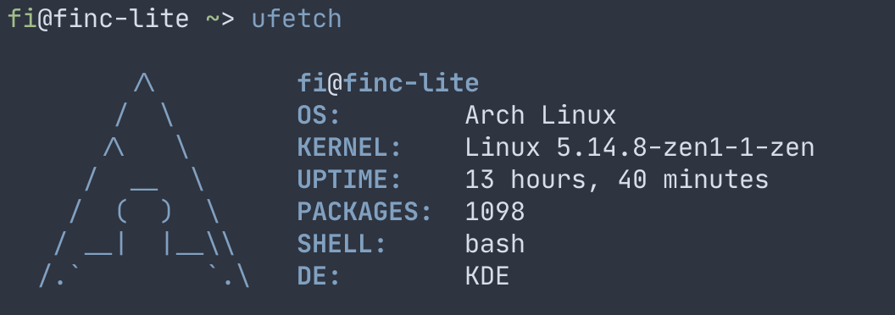
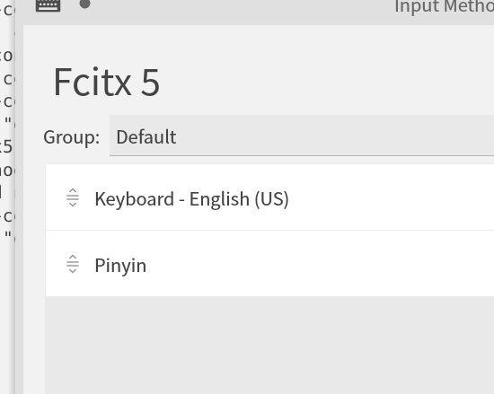

Arch Linux + Windows 双系统安装配置踩坑记
2020-08-19在你看到这篇文章时，有些内容可能已经过时了，请以 Arch Wiki 为准。
我不是 Linux 方面的专家，文章内容难免有误，欢迎交流。

系统安装
Arch Linux 的安装过程难度较大，我并不推荐初学者使用这个发行版。当然，在摸索过程中解决问题也是一种对初学者大有帮助的学习方式。
请在对安装过程有大致理解之后再开始动手安装。
ArchWiki 安装指导 一定要看，即使可能暂时看不懂。
推荐观看 The CW 的视频教程，手把手级别教学，非常适合新手学习。
-
最全 Arch Linux 安装教程——打造真正属于你的操作系统
注意：这个视频安装的不是双系统，有的步骤不能和视频教程里一模一样。（详见下文。）
-
装完 Arch Linux 你该做什么？用户权限，图形界面及软件安装详解【Arch第二期】
这里安装的桌面环境为 Deepin，个人更推荐 KDE. （详见下文。）
看完视频后，请参考这个文档开始动手安装：NiiiKlaus/Get-my-Arch-Linux . 文档内容与以上视频大致相同，并且有一些修改和补充。
双系统
- 在挂载（mount）环节的时候，我把
/mnt挂载到了我想挂载的 Linux 分区上；把/mnt/efi挂载到了EFI分区（如图所示）；不挂载/mnt/boot。

- 不能格式化EFI分区（4.3 定义分区格式 ），否则可能会破坏 Windows 的 EFI 文件。直接挂载上去就好。
- 在执行
grub-install这一步（7.9 安装grub相关 ）的时候，我在efi-directory参数填写的是/efi
以上步骤的详细解释请看 GRUB (简体中文)-ArchWiki
。上面描述的只是方法之一，你也可以使用其他方法，比如挂载/mnt/boot。具体情况不再详述，ArchWiki 能解答你的大部分疑惑。
如何查错
如果系统安装好后出现异常，可以修改内核启动参数打印更多报错信息：
- 在 GRUB 菜单选择启动项时，移动选项至 Arch Linux，按
e修改内核启动参数，进入文本编辑界面。 - 找到
linux开头的一行，把quiet参数去掉，按下ctrl + x启动系统。
这个技巧在遇到一些难以定位的问题时非常好用，输出的报错信息也可以用于向其他人求助。
双系统时间不同步
问题现象：关闭Windows系统，打开Linux系统后（或者相反），发现时间错乱了。
时间错乱会给 有些软件 带来致命问题。解决方案：
来源：printempw - Manjaro Linux 踩坑调教记录 - 双系统时间不同步
让 Windows 认为硬件时钟是 UTC，修改一下 Windows 注册表即可：
reg add "HKEY_LOCAL_MACHINE\System\CurrentControlSet\Control\TimeZoneInformation" /v RealTimeIsUniversal /d 1 /t REG_QWORD /f
安装桌面环境
综合个人使用体验以及对社区内活跃成员的观察，我推荐 KDE .
# SDDM 桌面管理器（用于登陆）
sudo pacman -S sddm
sudo systemctl enable sddm
# KDE Plasma
sudo pacman -S xorg plasma
# 网络管理
sudo pacman -S networkmanager
sudo systemctl enable NetworkManager
# KDE 大礼包
sudo pacman -S kde-applications
# 我喜欢保持简洁，没有安装所有的 KDE 应用，只安装了以下几个来自 KDE 的软件：
# 文件浏览器，终端，文档阅读器，图片查看器，解压软件，截图工具
# sudo pacman -S dolphin konsole okular gwenview ark spectacle
重启。至此，一个具有基本功能的系统已经安装好了！
软件安装
包管理器
编辑镜像源列表
编辑镜像列表文件 ，将速度比较快的镜像源地址放到文件最上面。比如：
添加 Arch Linux 中文社区仓库
详情请看：Arch Linux 中文社区仓库 « Arch Linux
建议使用这里 的镜像链接，我使用中国科学技术大学的镜像源，速度不错。记得安装 archlinuxcn-keyring 包。
sudo pacman -S archlinuxcn-keyring
添加 archlinuxcn 源之后，许多常用的软件能直接在pacman高速下载。
yay
来源：Arch Wiki
Arch 用户软件仓库 （Arch User Repository，AUR）是为用户而建、由用户主导的 Arch 软件仓库。AUR 中的软件包以软件包生成脚本（PKGBUILD ）的形式提供，用户自己通过 makepkg 生成包，再由 pacman 安装。创建 AUR 的初衷是方便用户维护和分享新软件包，并由官方定期从中挑选软件包进入 community 仓库。本文介绍用户访问和使用 AUR 的方法。
sudo pacman -S yay
有了 AUR，许多 Github 上的软件也可以通过包管理器安装！（如果有人写了安装脚本。）yay 是帮助下载 AUR 内容的工具，用法类似 pacman.
由于部分软件包是从 Github 上下载的，你也许会碰上这个问题：Jguer/yay - Github Issue - Proxy env variables being ignored.
本文提到的软件包如果无法在 pacman 安装，请试一下 yay.（搜索软件包 yay -Ss [keyword]）
字体
如果系统没有安装中文字体，中文内容可能会变成小方块。
# 思源黑体
sudo pacman -S adobe-source-han-sans-cn-fonts adobe-source-han-serif-cn-fonts
# emoji
sudo pacman -S noto-fonts-emoji
在 KDE 设置中修改字体即可。
如果有更细致的配置需求，请参考这篇文档 Font Configuration/Chinese (简体中文)
输入法 Fcitx5
sudo pacman -S fcitx5-im fcitx5-chinese-addons
# 词库（可选）
sudo pacman -S fcitx5-pinyin-zhwiki fcitx5-pinyin-moegirl
修改环境变量，编辑 ~/.pam_environment 加入以下内容：
INPUT_METHOD DEFAULT=fcitx5
GTK_IM_MODULE DEFAULT=fcitx5
QT_IM_MODULE DEFAULT=fcitx5
XMODIFIERS DEFAULT=\@im=fcitx5
设置开机启动，编辑 ~/.xprofile ，加入以下内容：
fcitx5 &
输入法启动后，在系统托盘里可用找到fcitx5的图标，右键菜单 => Configure 打开配置窗口。（或者在终端使用命令fcitx5-configtool）
添加 “Pinyin”选项，完成。（注意不是添加 Chinese 选项）

Fcitx5 也可以安装搜狗拼音的细胞词库，非常方便。安装方式略。
外观主题
Linux 的灵活性让桌面配置变得非常有趣，推荐你到 r/unixporn 逛一逛。
不过我最近更喜欢 KDE 默认主题🤣
应用推荐
命令行软件留到下一篇文章讲解👏
- Markdown 编辑器
typora，这篇博客就是用它写的。 - 聊天软件
telegram， 中文技术交流群很多（比如 Arch Linux 群组），用户体验极佳。 - 第三方网易云播放器
yesplaymusic，界面简洁美观，无社交功能。 - 跨平台的电子书阅读器 koodo reader .
- 视频播放器
mpv，界面UI很少。我参考 Youtube 的快捷键写了一套 input.conf . kdeconnect可以在局域网和手机互相传文件，无敌好用。
结语
至此，你已经成功安装好了 Arch Linux 🎉
欢迎加入 #archlinux-cn 群组，你可以在这里和大家交流 Arch Linux 相关的问题。